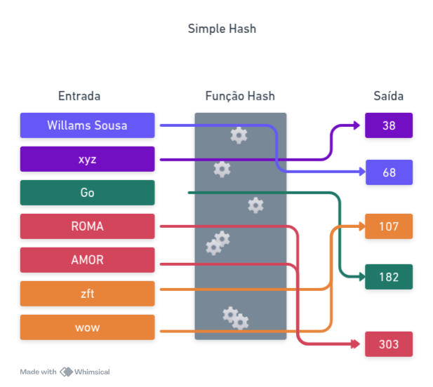

Introduction
Base64 e Codificação
Como funciona uma codificação? Imagine que você tem uma regra que diz o seguinte: caso a entrada for 'a', então o valor será 97, caso a entrada for 'b', então o valor será 98, caso for 'c', então o valor será 99, e assim em diante. Isso é um de-para e é também conhecido como tabela ASCII e envolve outros caracteres além do alfabeto. Descrevi um tipo de codificação.
Base64 é uma regra de codificação (Encode) que aplicamos na entrada produzindo uma saída. Isso significa que podemos lêr a entrada em base64 e produzir uma saída decodificada ou ler uma entrada decodificada e codificar em base64, respectivamente conhecidos como Encode e Decode.
A diferença em relação a tabela ASCII, é que a entrada pode ser qualquer coisa e não se limita apenas a caracteres individuais. No caso do Base64, a codificação funciona agrupando a entrada em blocos de 3 bytes (24 bits) e dividindo-os em 4 grupos de 6 bits. Cada um desses grupos de 6 bits é então convertido para um caractere correspondente em uma tabela de 64 símbolos. Essa table inclui as letras maiúsculas e minúsculas do alfabeto, seguido pelos números de 0 a 9 e então por dois caracteres especiais (+ e / no Base64 padrão e _ e - no Base64URL). Quando a entrada não é um múltiplo exato de 3 bytes, a codificação adiciona um caractere de preenchimento (=) para manter a consistência.
No Base64, a conversão ocorre em blocos e garante que qualquer sequência de bytes possam ser representadas apenas com caracteres seguros para transporte em protocolos como e-mails (MIME), URLs e JSON. Isso torna o Base64 útil para codificar binários, imagens, chaves criptográficas e outros dados que não são diretamente representáveis como texto legível.
O processo inverso, conhecido como decodificação (Decode), pega uma string codificada em Base64 e reconstrói os bytes originais, revertendo a conversão de 6 bits para 8 bits e removendo qualquer padding (=) que tenha sido adicionado na codificação. Assim como podemos converter a → 97 na tabela ASCII e depois reverter 97 → a, no Base64 podemos pegar "TWFu" e recuperar "Man" ou vice-versa, a partir de "Man" obter "TWFu".
No entanto, é importante lembrar que Base64 não é uma criptografia, pois qualquer pessoa pode decodificá-lo facilmente. Ele é apenas um método de representação de dados que facilita o transporte e armazenamento em sistemas que não suportam caracteres binários diretamente. Nota, o Base64 aumenta o tamanho dos dados em 33% em relação ao original.
Como funciona na prática?
Vamos supor que a entrada sera a string "Rox". Cada caractere em um computador é representado por um número inteiro conforme a tabela ASCII.
Passo 1: Obter os valores ASCII
Primeiro, vamos converter os caracteres em seus valores numéricos:
- R → 82
- o → 111
- x → 120
Agora, precisamos representar esses números em binário (base 2), pois a codificação Base64 trabalha diretamente com bits:
Passo 2: Converter os valores ASCII para binário (8 bits cada)
- R (82) → 01010010
- o (111) → 01101111
- x (120) → 01111000
Agora temos um total de 3 bytes (24 bits), que são agrupados assim:
01010010 01101111 01111000
Passo 3: Dividir em blocos de 6 bits
O Base64 trabalha com grupos de 6 bits, então precisamos separar nossos 24 bits assim:
010100 100110 111101 111000
Agora, cada grupo de 6 bits será convertido em um decimal cujo qual representa um índice na tabela Base64.
Passo 4: Converter os grupos de 6 bits para decimal
- 010100 → 20
- 100110 → 38
- 111101 → 61
- 111000 → 56
Agora, usamos a tabela Base64 para converter esses números em caracteres.
Passo 5: Mapear os valores na tabela Base64
A tabela Base64 contém 64 caracteres indexados de 0 até 63. Essa tabela segue uma ordem específica:
- Letras maiúsculas (A-Z) → índices 0 a 25
- Letras minúsculas (a-z) → índices 26 a 51
- Números (0-9) → índices 52 a 61
- Caracteres especiais (+ e /) → índices 62 e 63
Representação em Go:
const base64Table = "ABCDEFGHIJKLMNOPQRSTUVWXYZabcdefghijklmnopqrstuvwxyz0123456789+/"
Agora, usamos essa tabela para mapear os valores 20, 38, 61 e 56:
- base64Table[20] → "U"
- base64Table[38] → "m"
- base64Table[61] → "9"
- base64Table[56] → "4"
Com isso, o texto "Rox" foi convertido para Base64 como "Um94"
Resumo
1 - Convertemos os caracteres para seus valores ASCII (R = 82, o = 111, x = 120).
2 - Transformamos esses valores em binário (01010010 01101111 01111000).
3 - Dividimos em blocos de 6 bits (010100 100110 111101 111000).
4 - Convertemos cada grupo de 6 bits em um número decimal (20, 38, 61, 56).
5 - Mapeamos esses números na tabela Base64, resultando na string "Um94".
Bem tranquilo, certo?
Implementação em Go
O maior desafio que teremos é agrupar os bits em grupos de 6 bits, pois normalmente estamos trabalhando com 8 bits (1 byte). Isso implica que, a cada 3 bytes (24 bits no total), teremos 4 grupos de 6 bits, pois 24 / 6 = 4.
Se tivermos um valor binário qualquer e aplicarmos uma máscara bit a bit (bitwise AND) com 0b111111 (0x3F em hexadecimal), conseguimos extrair exatamente 6 bits da posição desejada.
Isso funciona porque o operador AND (&), mantém apenas os bits onde há 1 nos dois operadores, então podemos isolar porções específicas de um número maior.
Exemplo prático:
BYTE qualquer: 01010010 (82 em decimal)
Máscara de 6 bits: 00111111 (0x3F em hexadecimal)
Resultado após AND: 00010010 (18 em decimal)
Note que AND tem o poder de desligar o bit ou mantê-lo sem modificação.
| A | AND | B | C |
|---|---|---|---|
| 1 | AND | 1 | 1 |
| 1 | AND | 0 | 0 |
| 0 | AND | 0 | 0 |
Ou seja:
- Se você aplicar a máscara b00000000, vai apagar tudo
- Se você aplicar a máscara b00000001 vai apagar tudo e, para o primeiro bit, vai depender se o outro valor tem 1 ou 0: se tiver 1, ele será mantido, se tiver 0, ele apaga.
Outro exemplo: pegar apenas os bits 3 e 4 de um byte qualquer
BYTE qualquer: 01010010 (82 em decimal) Máscara de 6 bits: 00111111 (0x3F em hexadecimal) Resultado após AND: 00010010 (18 em decimal)
Podemos trabalhar diretamente com 3 bytes em um inteiro e percorrer a mensagem de entrada de 3 em 3 bytes e para cada passagem jogar os 3 bytes no inteiro e extrair os valores usando máscara de bits.
for i := 0; i < len(input); i += 6 {
blk := int32(in[i ]) << 16 |
int32(in[i + 1]) << 8 |
int32(in[i + 2])
out = append(out,
b64[(blk >> 18) & 0b00111111],
b64[(blk >> 12) & 0b00111111],
b64[(blk >> 6) & 0b00111111],
b64[ blk & 0b00111111],
)
}
O que foi feito?
Criamos um inteiro de 32 bits (int32) e jogamos os 3 bytes do input em cima dele. Para o primeiro byte (na posição i) jogamos para a esquerda 16 bits, para o segundo byte (na posição i + 1) jogamos para a esquerda 8 bits e para o terceiro byte (na posição i + 2) não precisamos jogar nada para a esquerda.
Imagine que são caixas que cabem 1 byte, o inteiro possui 4 dessas caixas, então precisamos jogar o primeiro byte para a esquerda 16 bits para que ele ocupe a terceira posição, o segundo byte para a esquerda 8 bits e o terceiro byte não precisamos jogar nada para a esquerda porque vai começar no bit 0. Graficamente temos isso:
Byte i + 0 = 01101111 (111 em decimal) Byte i + 1 = 01111000 (120 em decimal) Byte i + 2 = 01010010 (82 em decimal)
blk = 000000000 00000000 00000000 00000000
Primeiro byte entra começando no bit 16 blk = 0000000000101001000000000 00000000
Segundo byte entra começando no bit 8 blk = 00000000010100100111100000000000
Terceiro byte entra começando no bit 0 blk = 00000000010100100111100001010010
Vamos em câmera lenta. Suponha que
in[i ] = b10000000 in[i + 1] = b00000001 in[i + 2] = b00010000
blk := int32(in[i ]) << 16 // blk = 00000000_10000000_00000000_00000000
blk |= int32(in[i + 1]) << 8 // blk = 00000000_10000000_00000001_00000000
blk |= int32(in[i + 2]) // blk = 00000000_10000000_00000001_00010000
Ou seja, ligou o bit 32 vindo do primeiro byte (ele já estava na posição 8, deslocou 16), o bit 8 do segundo byte (estava na posição 0 e deslocou 8) e o bit 5 (estava na posição 5 do terceiro byte e não teve deslocamento).
Sei que vocẽ já entendeu, mas cabe lembrar que OR funciona da seguinte forma, você tem um valor qualquer com alguns bits ligados e outros não, quando você aplica o OR com outro valor, o que já existe no seu continua, o que não existe no seu, mas existe no outro cara, ele passa a existir no seu. P.ex.: o seu é b00010000 o outro cara é b00000001 agora o seu será b00010001. Veja a tabela do OR para refrescar a memória:
| A | OR | B | C |
|---|---|---|---|
| 1 | OR | 1 | 1 |
| 1 | OR | 0 | 1 |
| 0 | OR | 0 | 0 |
Agora que temos os 3 bytes dentro de um único inteiro de 32 bits (blk), precisamos extrair 4 grupos de 6 bits, pois cada caractere Base64 é representado por exatamente 6 bits.
A extração é feita aplicando deslocamento de bits (>>) e uma máscara (& 0b00111111), que serve para zerar os bits irrelevantes e pegar exatamente os 6 bits desejados.
Graficamente, temos:
blk = 00000000010100100111100001010010
Agora, extraímos os grupos de 6 bits um por um:
- Primeiros 6 bits: Para extrair os bits mais à esquerda, deslocamos 18 bits para a direita e aplicamos a máscara.
b64_1 = (blk >> 18) & 0b00111111 // 00000000_00000000_00000000_00010010 → 000100 b64_1 = 000100
- Segundos 6 bits: Deslocamos 12 bits para a direita e aplicamos a máscara.
b64_2 = (blk >> 12) & 0b00111111 // 00000000_00000000_00000010_01010010 → 010100 b64_2 = 010100
- Terceiros 6 bits: Deslocamos 6 bits para a direita e aplicamos a máscara.
b64_3 = (blk >> 6) & 0b00111111 // 00000000_00000000_01111000_01010010 → 011110
b64_3 = 011110
- Últimos 6 bits: Não há deslocamento, apenas aplicamos a máscara.
b64_4 = blk & 0b00111111 // 00000000_00000000_01111000_01010010 → 100010
b64_4 = 100010
Agora, temos os 4 índices da tabela Base64 prontos para serem mapeados!
Isso significa que podemos simplesmente usar o array b64 para obter os caracteres correspondentes, indexando diretamente com b64_1, b64_2, b64_3 e b64_4.
b64_1 = 000100 (4 em decimal) → Índiceb64[4]→ T b64_2 = 010100 (20 em decimal) → Índiceb64[20]→ U b64_3 = 011110 (30 em decimal) → Índiceb64[30]→ e b64_4 = 100010 (34 em decimal) → Índiceb64[34]→ Y
Ou seja, os números binários extraídos representam índices na tabela Base64, e ao acessar b64[4], b64[20], etc., obtemos os caracteres finais da string codificada.
Agora só precisamos lidar com casos onde o input tem menos que 3 bytes ou o input não é múltiplo de 3 bytes
if rem == 0 {
return string(out)
}
var blk int64 = 0
if rem == 1 {
blk = int64(in[len - rem]) << 16
out = append(out,
b64[(blk >> 18) & 0b00111111],
b64[(blk >> 12) & 0b00111111],
'=',
'=',
)
} else if rem == 2 {
blk = int64(in[len - rem]) << 16 | int64(in[len - rem + 1]) << 8
out = append(out,
b64[(blk >> 18) & 0b00111111],
b64[(blk >> 12) & 0b00111111],
b64[(blk >> 6) & 0b00111111],
'=',
)
}
return string(out)
Quando a entrada nã é múltiplo de 3 significa que ao sairmos do laço principal restará 1 ou 2 bytes. A especificação do Base64 exige que tenhamos 4 grupos fechados de 6 bits, que resultam 4 caracteres da tabela.
Quando sobrar apenas 1 byte, teremos que agrupar em blocos de 6 bits e ter um total de 4 blocos. Como obter um total de 4 blocos de 6 bits com apenas 8 bits? A especificação diz que temos que pegar os 6 bits e obter qual o valor da tabela, para os 2 bits que sobrarem colocamos zeros **à direita** para completar 6 bits e então obtemos o valor na tabela e para os dois grupos restantes simplesmente consideramos o valor '='.
Então temos que: O primeiro grupo de 6 bits do byte pega um valor normalmente da tabela, o outro valor é obtido completando os 2 bits que sobraram com quatro zeros à direita e os outros dois grupos de 6 bits consideramos o '=' para cada um.
Quando sobram 2 bytes a regra é a mesma. Isto é, dos 16 bits teremos 2 valores _cheios_ e os 4 bits que sobram recebem dois zeros à direita e, diferente do caso que sobra apenas 1 byte, nesse caso precisamos de apenas um '=' para completar o grupo de 4 valores uma vez que já temos 3 grupos prontos.
P.ex.:
Se tivermos 1 byte sobrando (A = 01000001 em binário = 65 em decimal), precismos transformar isso em 4 blocos de 6 bits. Então fazemos o seguinte:
010000010000==
Para os dois primeiros (coincidentemente) teremos o mesmo valor na b64table ('Q') e para os outros dois teremos o '='. Assim, ficamos com
QQ==
Com isso, c código completo fica assim:
package main
import (
"fmt"
"encoding/base64"
)
const b64 = "ABCDEFGHIJKLMNOPQRSTUVWXYZabcdefghijklmnopqrstuvwxyz0123456789+/"
func Encb64(in []byte) string {
var out []byte
len := len(in)
rem := len % 3
for i := 0; i < len - rem; i += 3 {
blk := int64(in[i ]) << 16 |
int64(in[i + 1]) << 8 |
int64(in[i + 2])
out = append(out,
b64[(blk >> 18) & 0b00111111],
b64[(blk >> 12) & 0b00111111],
b64[(blk >> 6) & 0b00111111],
b64[ blk & 0b00111111],
)
}
if rem == 0 {
return string(out)
}
var blk int64 = 0
if rem == 1 {
blk = int64(in[len - rem]) << 16
out = append(out,
b64[(blk >> 18) & 0b00111111],
b64[(blk >> 12) & 0b00111111],
'=',
'=',
)
} else if rem == 2 {
blk = int64(in[len - rem]) << 16 | int64(in[len - rem + 1]) << 8
out = append(out,
b64[(blk >> 18) & 0b00111111],
b64[(blk >> 12) & 0b00111111],
b64[(blk >> 6) & 0b00111111],
'=',
)
}
return string(out)
}
func main() {
testCases := []string{"Manaed", "1234567890"}
for _, test := range testCases {
encoded := Encb64([]byte(test))
encondedGo := base64.StdEncoding.EncodeToString([]byte(test))
fmt.Println("Base64 de ", test, ": ", encoded)
fmt.Println("Base64 Go : ", test, ": ", encondedGo)
}
}
Curiosidade: nossa versão fica alguns ms mais lenta que a versão do Go, sintam-se à vontade para estudar a versão em Go, agora poderão entender todo o código!
Hashing e SHA-256
Introdução
Funções hash são operações matemáticas que transformam uma entrada de qualquer tamanho em uma saída de tamanho fixo. Para uma mesma entrada, a saída gerada será sempre a mesma.
Uma das principais propriedades das funções hash é que a operação é irreversível, ou seja, não é possível obter a entrada original a partir da saída gerada.
Além disso, o tamanho da saída é sempre fixo, independentemente do tamanho da entrada. Isso significa que uma entrada curta e uma entrada muito longa geram um hash com a mesma quantidade de bits.
Embora seja esperado que entradas diferentes gerem hashes diferentes, existe a possibilidade de colisões, onde duas entradas distintas podem produzir o mesmo hash. A qualidade da função hash está diretamente ligada à sua capacidade de minimizar essas colisões.
Para começar, vamos criar uma função hash simples e passar por todos os pontos mencionados acima. Nossa função hash vai fazer o seguinte: dada uma entrada, somamos os valores ASCII da entrada e dessa soma obtemos o módulo 256, ou seja, teremos sempre um valor entre 0 e 255 não importando o tamanho da entrada. Acompanhe:
package main
import (
"fmt"
)
func simpleHash(in string) int {
hash := 0
for _, char := range in {
hash += int(char)
}
return hash % 256
}
func main() {
input1 := "willams sousa"
input2 := "Go"
input3 := "xyz"
fmt.Printf("Hash de '%v':%v\n", input1, simpleHash(input1))
fmt.Printf("Hash de '%v':%v\n", input2, simpleHash(input2))
fmt.Printf("Hash de '%v':%v\n", input3, simpleHash(input3))
}
Nosso simpleHash tem apenas 256 saídas possíveis, mas pode processar infinitas entradas distintas. Isso inevitavelmente leva a colisões, pois, pelo Princípio da Pomba (Pigeonhole Principle), há mais entradas possíveis do que saídas distintas.
Por exemplo, todo palíndromo leva a colisões, pois a soma é uma operação comutativa, e a soma dos códigos ASCII dessas strings produz sempre o mesmo valor, independentemente da ordem dos caracteres. Mas esse problema não se restringe apenas a palíndromos. A string "wow" e "zft" também colidem, pois:
- "wow" → w=119, o=111, w=119 → 119 + 111 + 119 = 349
- "zft" → z=122, f=102, t=125 → 122 + 102 + 125 = 349
Isso demonstra que a ordem dos caracteres não é levada em conta, resultando em muitas colisões.
Propriedades de funções hash aplicadas ao simpleHash:
- Determinística: Para a mesma entrada, sempre obtemos a mesma saída.
- Irreversível: Nossa função não é verdadeiramente irreversível, pois permite encontrar entradas compatíveis facilmente.
- Alta entropia e efeito avalanche: Pequenas mudanças na entrada não causam mudanças drásticas no hash.
- Resistência à pré-imagem: Se tivermos o valor H, podemos facilmente encontrar um X tal que hash(X) = H, devido ao baixo espaço de saída.
- Saída de tamanho fixo: A saída sempre tem 256 valores possíveis, independentemente do tamanho da entrada.
Apesar disso, nosso algoritmo parece irreversível, mas pelos motivos errados! Devido à enorme incidência de colisões, não temos como saber qual foi a entrada exata que gerou determinada saída. Isso, porém, não é uma característica desejável em uma função hash criptográfica.

Podemos melhorar nossa função hash usando multiplicação por um fator primo melhorando a dispersão e reduzindo colisões triviais. P.ex:
func betterHash(input string) int {
hash := 0
prime := 31 // Usar um número primo ajuda a dispersar os valores
for i, char := range input {
hash = hash*prime + int(char)
}
return hash & 0xFFFFFFFF // tamanho fixo (32 bits)
}
Contudo, o espaço da saída ainda é muito pequeno, estamos limitando a saída a 32 bits. Para grandes volumes de dados as colisões ainda serão inevitáveis e o algorítmo também não é resistente a pré-imagem. Além disso, pequenas mudanças na entrada não afetam significativamente a saída (efeito avalanche).
Esses exemplos foram um ótimo ponto de partida, mas a computação exigiu funções hash mais poderosas. Vamos analisar como os algoritmos evoluíram ao longo do tempo até chegarmos às soluções modernas, como o SHA-256.
Famílias de Algorítmos Message Digest
MD2
O primeiro algorítmo que vamos discutir é conhecido como MD2, o primeiro da família MD (Message Digest) e foi desenvolvido por Ronald Rivest em 1989. Ele foi projetado especificamente para computadores de 8 bits. Apesar de ter sido uma inovação importante, o MD2 se tornou obsoleto com o tempo devido a ataques criptográficos bem-sucedidos. Suas principais características eram:
- Tamanho da saída: 128 bits (16 bytes)
- Entrada de tamanho variável
- Projetado para máquinas de 8 bits
- Inseguro desde 2004 devido a ataques práticos
- Lento em hardware moderno devido à otimização para 8 bits
Como o MD2 Funciona?
A especificação do MD2 pode ser encontrada na RFC 1319. Esse algorítmo transforma qualquer entrada em um hash de 128bits. Ele faz isso seguindo 3 etapas principais:
1 - Padding
Para garantir que o tamanho da entrada seja um múltiplo de 16 bytes, adicionamos bytes de padding no final. A regra é a seguinte:
- se o tamanho da mensagem já for múltiplo de 16, adicionamos 16 bytes de 0x10.
- se falta N bytes para completar 16, adicionamos N bytes do valor N
Exemplo:
Entrada original: [41 42 43] = "ABC" Tamanho: 3 bytes Padding necessário: 16 - 3 = 13 bytes Resultado final: [41 42 43 0D 0D 0D 0D 0D 0D 0D 0D 0D 0D 0D 0D]
2 - Checksum
O MD2 adiciona um checksum de 16 bytes, que é computado iterando sobre a mensagem e aplicando XOR com uma tabela de permutação.
Essa tabela de permutação S-box (256 valores) foi escolhida manualmente por Rivest e usada para misturar os dados.
A fórmula para calcular o checksum de 16 bytes é:
checksum[j] = checksum[j] XOR S(block[i] XOR checksum[j - 1])
Isso adiciona o efeito de difusão na mensagem antes da fase final.
3 - Processamento Principal
Agora pegamos a mensagem + checksum e a processamos usando uma permutação de 48 bytes, misturando os blocos de 16 bytes repetidamente.
O buffer inicial (48 bytes) é atualizado 18 vezes para fortalecer a resistência a colisões.
O MD2 não usa operações de bitwise complexas como rotação, apenas XOR e tabelas de substituição são usadas.
Implementação do MD2 em Go
A tabela S-box define os bytes que serão permutados internamente.
package main
import (
"fmt"
)
// Tabela de permutação S-box
var S = [256]byte{
41, 46, 67, 201, 162, 216, 124, 1, 61, 54, 84, 161, 236, 240, 6, 19,
98, 167, 5, 243, 192, 199, 115, 140, 152, 147, 43, 217, 188, 76, 130, 202,
30, 155, 87, 60, 253, 212, 224, 22, 103, 66, 111, 24, 138, 23, 229, 18,
// (o restante foi omitido por brevidade, consulte a RFC 1319)
}
func MD2(input []byte) [16]byte {
// Parte 1: Padding
paddingSize := 16 - (len(input) % 16)
padding := make([]byte, paddingSize)
for i := range padding {
padding[i] = byte(paddingSize)
}
input = append(input, padding...)
// Parte 2: Checksum
var checksum [16]byte
var L byte = 0
for i := 0; i < len(input); i += 16 {
for j := 0; j < 16; j++ {
checksum[j] ^= S[input[i+j]^L]
L = checksum[j]
}
}
input = append(input, checksum[:]...)
// Parte 3: Transformação Principal
var X [48]byte
for i := 0; i < len(input); i += 16 {
// Copia bloco para X
copy(X[16:32], input[i:i+16])
for j := 0; j < 16; j++ {
X[32+j] = X[16+j] ^ X[j]
}
var t byte = 0
// 18 rounds de processamento
for round := 0; round < 18; round++ {
for j := 0; j < 48; j++ {
X[j] ^= S[t]
t = X[j]
}
t += byte(round)
}
}
// O hash final está nos primeiros 16 bytes de X
var hash [16]byte
copy(hash[:], X[:16])
return hash
}
func main() {
data := []byte("Mensagem de teste")
hash := MD2(data)
fmt.Printf("MD2 Hash: %x\n", hash)
}
MD4 - A Evolução do Message Digest
O MD4 (Message Digest 4) foi desenvolvido por Ronald Rivest em 1990 como uma melhoria do MD2, projetado especificamente para processadores de 32 bits. Ele introduziu um novo modelo de operação baseado em três rodadas de funções não lineares, tornando-o muito mais rápido que o MD2.
No entanto, o MD4 é extremamente fraco e foi quebrado rapidamente. Mesmo assim, sua estrutura inspirou diretamente o MD5 e SHA-1, servindo de base para os algoritmos de hash modernos e que veremos logo mais.
Como o MD4 Funciona?
A especificação do MD4 pode ser encontrada na RFC 1320. O algoritmo transforma qualquer entrada em um hash de 128 bits usando 3 rodadas de operações baseadas em soma modular e funções booleanas.
O MD4 segue 4 etapas principais:
1 - Padding
- O comprimento da mensagem é ajustado para que seja múltiplo de 512 bits (64 bytes).
- Um bit 1 é adicionado, seguido de zeros até que faltem 64 bits para completar um bloco.
- Os últimos 64 bits armazenam o tamanho original da mensagem (antes do padding)
Exemplo:
Se tivermos a mensagem "abc", que tem 24 bits (3 bytes), adicionamos:
01100001 01100010 01100011 10000000 00000000 ... (até completar 448 bits)
E então adicionamos os 64 bits finais contendo o tamanho da mensagem.
2 - Inicialização dos Registradores
MD4 usa quatro registradores de 32 bits, inicializados com valores fixos:
A = 0x67452301
B = 0xEFCDAB89
C = 0x98BADCFE
D = 0x10325476
Esses valores são inspirados na constante da raiz quadrada de números primos.
3 - Processamento em 3 Rodadas
A mensagem é dividida em blocos de 512 bits (64 bytes), e cada bloco passa por três rodadas de operações matemáticas:
3.1 - Função F (AND, OR, NOT)
F(X, Y, Z) = (X AND Y) OR (NOT X AND Z)
Essa função favore um dos valores (X) e ajuda na difusão.
3.2 - Função G (Majority Vote)
G(X, Y, Z) = (X AND Y) OR (X AND Z) OR (Y AND Z)
Utiliza uma "votação" entre os três valores.
3.3 - Função H (XOR)
H(X, Y, Z) = X XOR Y XOR Z
Mistura os bits de forma caótica.
Cada uma dessas funções é aplicada a cada bloco de 512 bits da mensagem, alterando os registradores A, B, C e D.
4 - Hash Final
Após todas as rodadas, os valores finais dos registradores A, B, C e D são concatenados para formar um hash de 128 bits (16 bytes).
Implementação do MD4 em Go
package main
import (
"encoding/binary"
"fmt"
)
func leftRotate(x uint32, n uint) uint32 {
return (x << n) | (x >> (32 - n))
}
// Funções F, G e H do MD4
func F(x, y, z uint32) uint32 { return (x & y) | (^x & z) }
func G(x, y, z uint32) uint32 { return (x & y) | (x & z) | (y & z) }
func H(x, y, z uint32) uint32 { return x ^ y ^ z }
// Transformação principal do MD4
func md4Transform(state *[4]uint32, block []byte) {
var X [16]uint32
for i := 0; i < 16; i++ {
X[i] = binary.LittleEndian.Uint32(block[i*4:])
}
a, b, c, d := state[0], state[1], state[2], state[3]
// Primeira rodada
a = leftRotate(a+F(b, c, d)+X[0], 3)
d = leftRotate(d+F(a, b, c)+X[1], 7)
c = leftRotate(c+F(d, a, b)+X[2], 11)
b = leftRotate(b+F(c, d, a)+X[3], 19)
// Segunda rodada
a = leftRotate(a+G(b, c, d)+X[0]+0x5A827999, 3)
d = leftRotate(d+G(a, b, c)+X[4]+0x5A827999, 5)
c = leftRotate(c+G(d, a, b)+X[8]+0x5A827999, 9)
b = leftRotate(b+G(c, d, a)+X[12]+0x5A827999, 13)
// Terceira rodada
a = leftRotate(a+H(b, c, d)+X[0]+0x6ED9EBA1, 3)
d = leftRotate(d+H(a, b, c)+X[8]+0x6ED9EBA1, 9)
c = leftRotate(c+H(d, a, b)+X[4]+0x6ED9EBA1, 11)
b = leftRotate(b+H(c, d, a)+X[12]+0x6ED9EBA1, 15)
state[0] += a
state[1] += b
state[2] += c
state[3] += d
}
func md4(input []byte) [16]byte {
// Padding
length := len(input)
padding := []byte{0x80}
for (len(input)+len(padding))%64 != 56 {
padding = append(padding, 0x00)
}
lengthBits := make([]byte, 8)
binary.LittleEndian.PutUint64(lengthBits, uint64(length*8))
input = append(input, padding...)
input = append(input, lengthBits...)
// Inicializar registradores
var state = [4]uint32{0x67452301, 0xEFCDAB89, 0x98BADCFE, 0x10325476}
// Processar blocos de 512 bits (64 bytes)
for i := 0; i < len(input); i += 64 {
md4Transform(&state, input[i:i+64])
}
// Converter saída para 16 bytes
var hash [16]byte
for i := 0; i < 4; i++ {
binary.LittleEndian.PutUint32(hash[i*4:], state[i])
}
return hash
}
func main() {
data := []byte("Mensagem de teste")
hash := md4(data)
fmt.Printf("MD4 Hash: %x\n", hash)
}
Ataques Contra o MD4
O MD4 foi um grande avanço na época, mas também teve falhas graves de segurança. Aqui, exploramos os ataques mais relevantes que levaram à sua obsolescência.
1 - Ataque de Colisão (1995) - Hans Dobbertin
Em 1995, o criptógrafo Hans Dobbertin publicou um ataque prático contra o MD4, demonstrando que era possível encontrar colisões em alguns segundos.
Isso quebra a confiabilidade do algoritmo, pois qualquer atacante pode substituir um documento sem alterar seu hash.
Como Dobbertin quebrou o MD4? Ele explorou fraquezas estruturais nas três rodadas do MD4, usando um método conhecido como differential cryptanalysis.
Ele encontrou colisões em menos de 1 minuto usando um computador comum da época!
2 - Ataque de Colisão Rápido (2007) - Wang et al.
Em 2007, Xiaoyun Wang, Hongbo Yu e Yiqun Lisa Yin aprimoraram os ataques de Dobbertin e conseguiram gerar colisões em tempo real.
3 - Ataque de Pré-imagem (2009)
Em 2009, pesquisadores mostraram que dado um hash MD4, era possível reconstruir uma entrada que produzia o mesmo valor.
Esse ataque é catastrófico para aplicações que dependem de integridade, como assinaturas digitais.
4 - Ataque a Senhas no NTLM (Windows)
O MD4 foi usado no NTLM (Microsoft Windows Authentication). Como os ataques de colisão e pré-imagem são rápidos, foi possível quebrar senhas NTLM em milissegundos.
Implementando um Ataque de Colisão Contra MD4 em Go
Vamos gerar duas mensagens diferentes com o mesmo hash.
package main
import (
"fmt"
)
// Simulação de colisão no MD4
func findCollision() {
msg1 := []byte("Ataque123")
msg2 := []byte("At4que123") // Alteração mínima
hash1 := md4(msg1)
hash2 := md4(msg2)
fmt.Printf("Mensagem 1: %s\nHash 1: %x\n", msg1, hash1)
fmt.Printf("Mensagem 2: %s\nHash 2: %x\n", msg2, hash2)
if hash1 == hash2 {
fmt.Println("Colisão encontrada!")
} else {
fmt.Println("Nenhuma colisão encontrada.")
}
}
func main() {
findCollision()
}